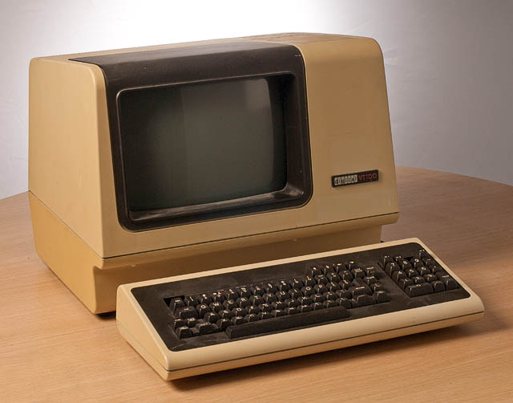
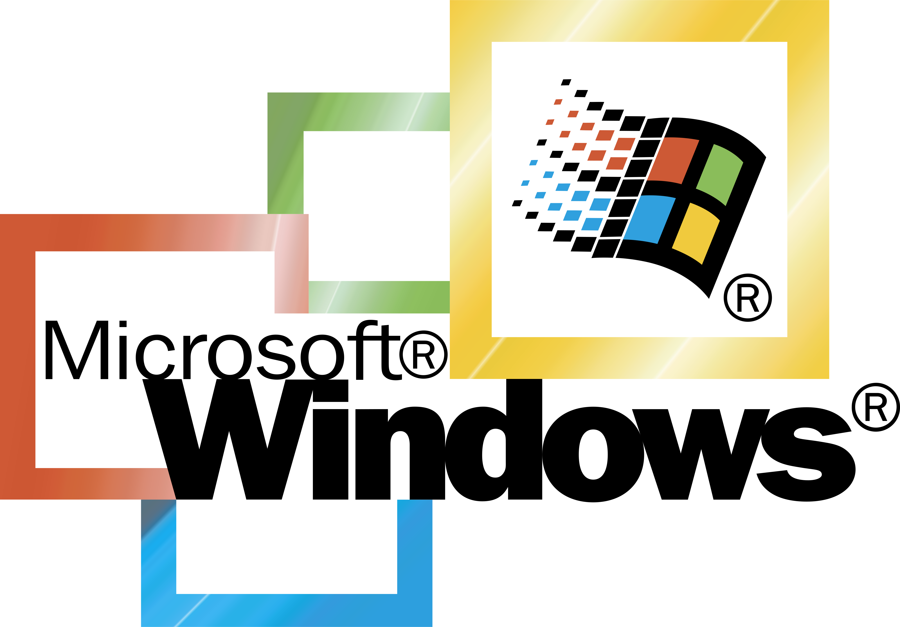

Para hablar de sistemas operativos es necesario hablar de las computadoras, pues son ellos
los que ven
nacer y crecer a los sistemas operativos.
Una computadora es un aparato constituido por dispositivos electrónicos (en la actualidad)
interconectados entre sí, los cuales se comunican por señales eléctricas que se interpretan como
información. Para hacer esto posible se necesitan instrucciones para indicar a estos
dispositivos como
interpretar dichas señales eléctricas. Todas esas instrucciones en conjunto (drivers, programas,
firmwares, entre otros) conforman al Sistema Operativo.
Hasta el día de hoy existen muchos sistemas operativos los cuales fueron creados para distintos
fines,
de donde se destacan dos ramas, los equipos de computo servidores y los equipos personales
u hogareños.
Los servidores son utilizados por las grandes empresas para brindar un servicio, servir datos,
administrar y guardar cantidades grandes de datos para un futuro análisis y posterior toma de
decisiones.
Los equipos personales son los dispositivos como el que estás usando ahora mismo, sea computadora,
smartphone, TVsmart, smartwatch, entre otros dispositivos creados y por crear. Estos son los equipos al
alcance de la mayoría de personas en el mundo.
Los sistemas operativos para servidores son construidos y brindados por proyectos de base
GNU/Linux,
Microsoft Windows®, y Apple Computer®, pero por su construcción y caracteristicas específicas
Linux predomina en este ámbito.
Los sistemas operativos para dispositivos de consumo son dominados por Microsoft Windows® y Apple
Computers® en PC, y en móviles son Android (con kernel Linux) y Apple, Windows intendo abrirse
camino en este ámbito per no lo logró.
Sistemas operativos por distribuciones
Distribuciones Windows®

Las distribuciones Windows® son las más utilizadas en entornos de oficina y educativas, por su
calidad en Interfaz gráfica (GUI) y su excelente suite ofimática aunque hoy en día con alternativas,
Microsoft Office®.
Entre sus distribuciones más aceptadas por los usuarios se nombran:
- Windows 11
- Windows 10
- Windows 7
- Windows XP
- Windows 2000
Aunque existen otras versiones, por antiguedad o utilidad son las más destacables las antes mencionadas.
Es vital mencionar que existen distribuciones para servidores por parte de Windows® aunque por su
área tan específica no son conocidas por mi parte al redactar este texto.
Distribuciones Linux

Aunque su fuerte son las distribuciones para servidores, y de hecho cada "distro" creada para usuarios
comunes tiene su complemento para servidores las versiones más comunes para usuarios de PC son:
- Ubuntu
- Fedora
- Arch
- Debian
- SlackWare
- S.u.S.E.
Acá puedes ver la variedad de distribuciones Linux existentes.
Como se mencionó este tipo de software es creado para propósitos específicos, con la base del proyecto
GNU/Linux el cual refiere a que su base es código libre (editable, leible, abierto a ser estudiado).
Distribuciones MacOs de Apple Computer®
![Apple Computer Logo]()
Las distribuciones por Apple Computer® para sus dispositivos Apple son las siguientes:
- Ventura
- Monterey
- Big Sur
- Catalina
- Mojave
- High Sierra
- Sierra
- El Capitan
- Yosemite
- Mavericks
- Montain Lion
- Lion
- Snowlepard
- Leopard
- Tiger
- Panter
- Jaguar
- Cheetah
- Puma
Estas son algunas distribuciones para PC Apple, su uso únicamente se puede en dispositivos Apple sin
problemas.
Instalación de un sistema operativo
Para instalar un sistema operativo existen muchos métodos, ya sea por CD, DVD o actualmente por un
dispositivo de memoria por USB.
La forma más común es por memoria USB, para realizar esta tarea te dejo este video.
Tema importante: ve si tu disco duro es de tecnología MBR o GPT aquí.
Es util mencionar que en el caso de los sistemas de Windows® es necesario la compra de una licencia
específicamente para la versión que se instale, eso es posible en muchas web como GVPMall entre otras
parecidas, muchos Youtubers ofertan lugares para comprarlas con descuento, puedes ver información de
este tipo en Multimedia.